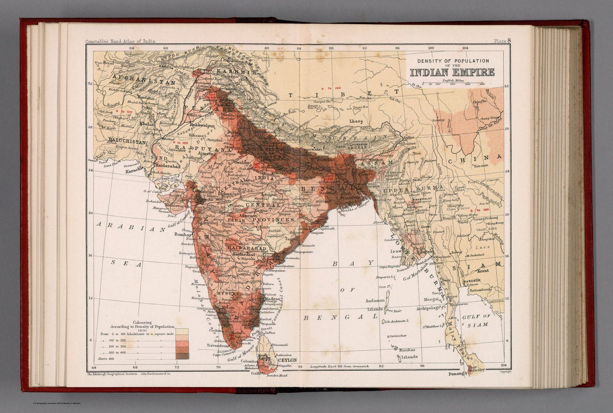

← Administered Empire and Victorian Atlas

The thematic plate
On Plate 8 a colour key classifies density while the base map retains administrative divisions and major settlements.
Colour as quantity
The map is a choropleth: colour represents the intensity of a measured variable rather than political possession or physical relief. Millions of people are abstracted into zones that can be compared.
Statistics and government
The sheet belongs to a wider nineteenth-century culture of census, tabulation and comparative administration. The map shows how census data was made spatial: a society rendered as graded bands of colour.
On the sheet
The key is the 1891 census made into colour: ‘Colouring according to density of population 1891’, five bands from 0 to 100 inhabitants to the square mile up to ‘above 400’. The darkest band is a ribbon that follows the Ganges from the Punjab to the delta and reappears on the Malabar coast and in Travancore; the Deccan between Bombay and Hyderabad is among the palest parts of British India. The scheme spills over the frontier – ‘0 to 100’ is printed in red across Afghanistan, Baluchistan, Tibet and Siam – so that countries never counted are given the lowest band by default.
The gaze
Density is a ratio, and a ratio needs a denominator. Every band on this plate depends on the boundary drawn beneath it, so census figure and administrative division are fused: a unit is coloured by its average, and whatever varies inside it disappears.